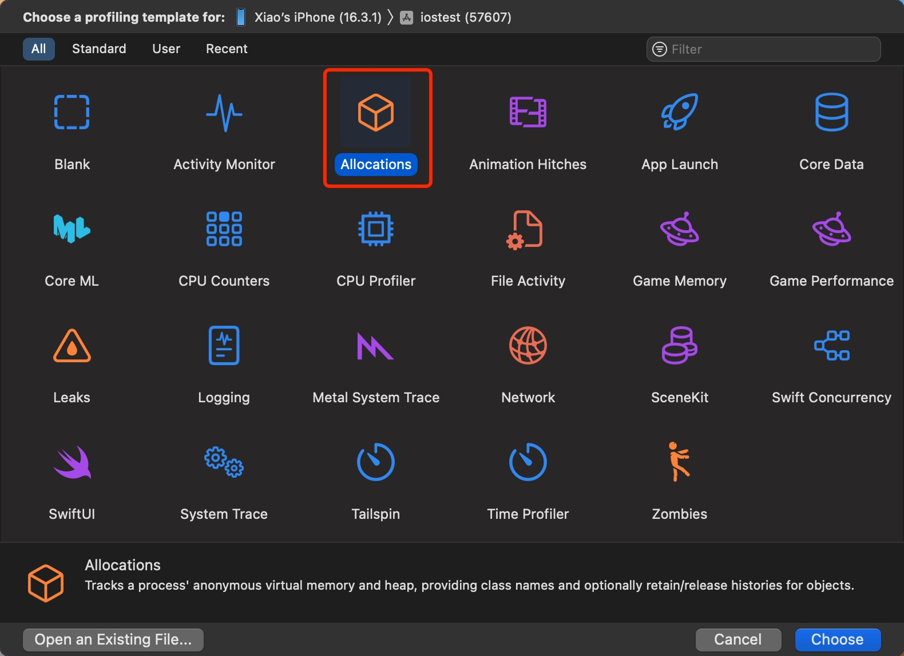
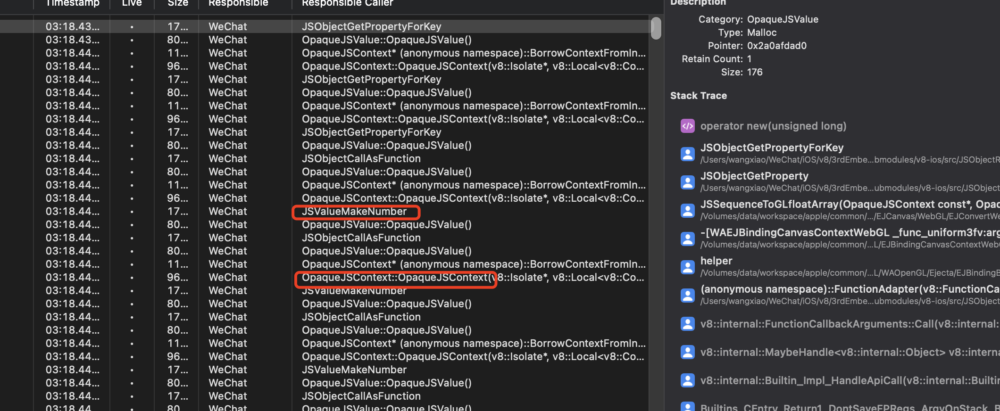
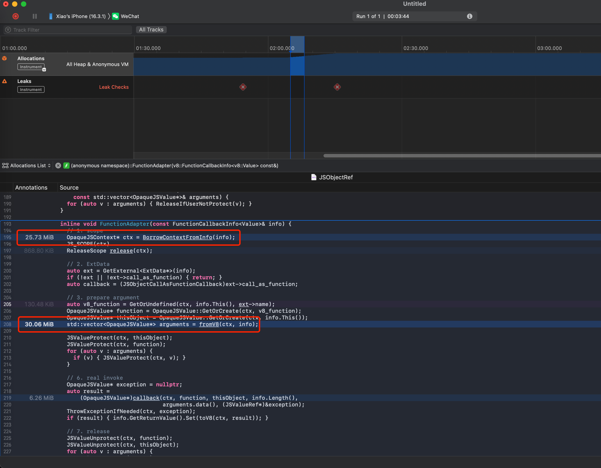
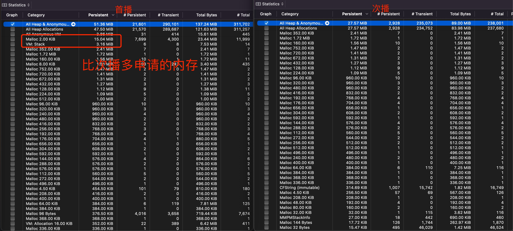

iOS 内存分析 - Allocations
本文以实际案例入手，介绍如何使用 Instruments 提供的 Allocations 分析内存申请情况来优化内存占用、分析泄露问题。
Allocations 统计所有内存的申请，包括堆内存和栈内存，并可以查看每次申请内存时的大小、函数调用链等重要信息。对我们分析内存有很大的帮助。

提到泄露，其实 Instruments 还提供了一个 Leaks 的工具专门分析泄露问题。但是实际遇到的问题往往没那么简单。只有没有任何对象和指针指向的对象才会被 Leaks 认为是泄露，但是实际场景中很多泄露的内存其实是有指针指向它的，只是逻辑比较复杂我们不知道有谁指向它。这种情况下分析内存申请情况就很重要了，这里介绍一些实际的例子。
分析泄露
前段时间遇到了个内存问题，停留在某个页面不动，但是内存却一直在涨，很明显有地方在一直申请内存没释放，但是这并不代表着泄露了，因为有地方持有着这些对象，只是我根本不知道谁持有的。
所以我使用 Allocations 截取一段时间内的内存申请情况。可以看到申请的内存的列表，并且可以看到每次申请内存时的堆栈。

只需要分析这些内存都是哪个函数申请的就知道泄露点了。同时，还可以双击右侧的堆栈里的某个函数，就可以看到下面这种聚合的信息，可以清楚的看到某个函数或者某一行代码申请了多少内存。

以上图为例，泄露的地方可以确认是红框里的内容。
分析内存问题
前段时间遇到个问题，有个小游戏首次播放音频会增加 50 M 内存，但是同样的音频再次播放就只会增加 30 M 内存，稳定差了 20M。
很显然，需要分析一下首播和次播时申请的内存有什么区别。
用 Allocations 分析后发现首播确实比次播多了一些内存申请记录。

找到首播多申请的内存记录，点击查看堆栈，就可以很清晰的看到是哪些逻辑申请的，这些逻辑次播没有被调用。问题迎刃而解。
转载请注明出处：iOS 内存分析 - Allocations - 专业点
欢迎关注我的公众号

推荐

公众号推荐
欢迎关注我的公众号一起愉快的交流。